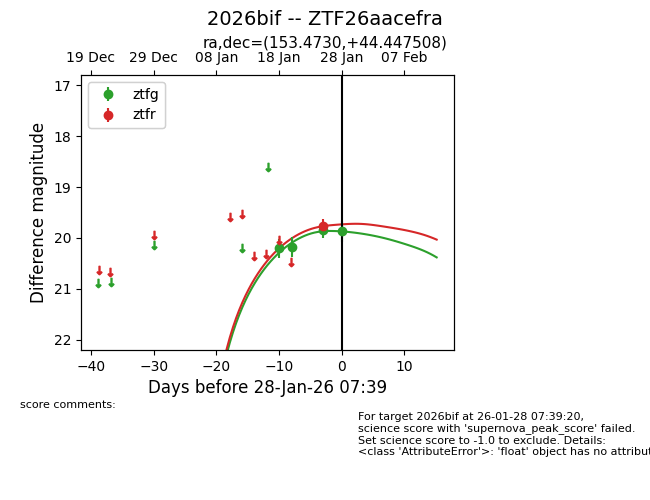
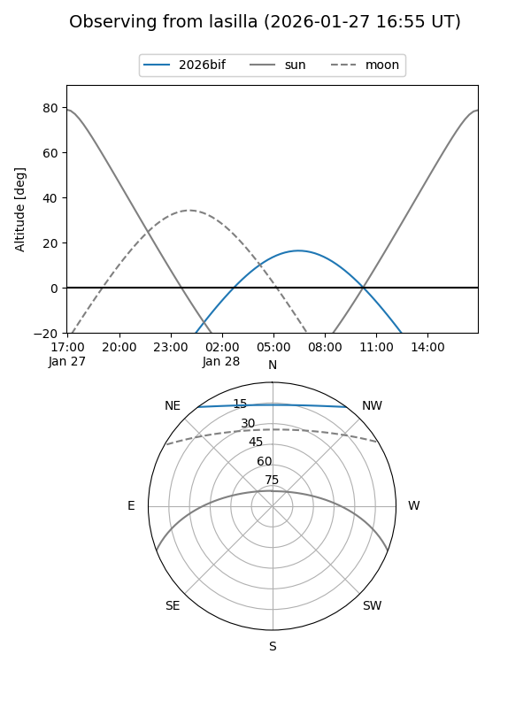
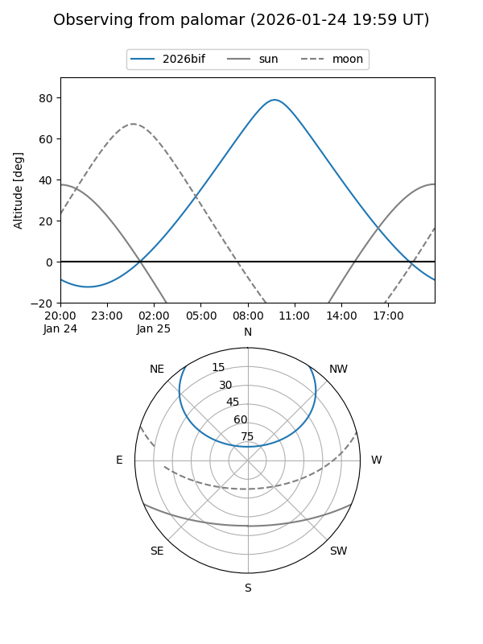

2026bif
Target 2026bif at 2026-01-28 07:41
Aliases and brokers:
FINK: link
Lasair: link
ALeRCE: link
TNS: link
YSE: link
alt names
ZTF26aacefra (ztf,fink_ztf)
2026bif (tns,yse)
Coordinates:
equatorial (ra, dec) = 153.4730,+44.44751
equatorial (HMS+DMS) = 10:13:53.53,+44:26:51.03
galactic (l, b) = (173.5674,+54.13124)
Flags:
Photometry:
last ztfg=19.87, ztfr=19.77
4 ztfg, 1 ztfr detections
Lightcurve

Visibility


Additional plots